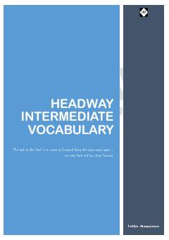

HIHeadway Intermediate darajasidagi ingliz tili so'zlari va ularning tarjimalari.
Ushbu qo'llanma Headway Intermediate darajasidagi ingliz tili so'z boyligini kengaytirish va mustahkamlash uchun mo'ljallangan. Lug'atda so'zlarning ma'nolari rus va o'zbek tillaridagi tarjimalari hamda izohlari bilan berilgan.